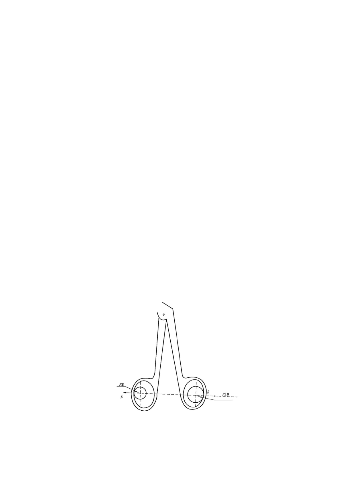

5.4 Service performance tests
5.4.1 Opening and closing test
Imitate the practical operation and inspect it visually.
5.4.2 Locking engagement force
The locking engagement force shall be tested under simulated application conditions, with
the forceps jaws slightly open to the degree specified by the manufacturer, indicated by
the opening height at 1/3 of the front ends of the jaws. With the handle of the separating
forceps in the locked state, measure the engagement force at 1/3 of the front end of the
jaw in this state, that is, the locking engagement force.
5.4.3 Transmission coefficient of opening force
When the forceps jaws open at an angle of 30°(or 70% of the maximum opening angle if
70% is less than 30°), apply a force (fi) of 5N~15N to the handle, with intervals not
exceeding 3N. Record the opening force (fo) generated at the front ends of the jaws,
perpendicular to the bisector of the opening angle of the forceps jaws. Then, fit the
collected data using the least squares method to obtain the value of fo/fi, which is the
transmission coefficient of opening force.
The direction of fi is shown in Figure 1, and the application point of fi is determined by
simulating clinical application, it is the point where the handle is subject to force in a free
state.
Figure 1
9